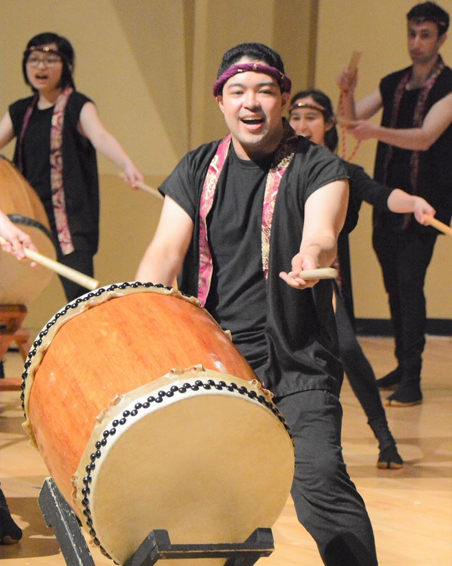

Topic Overview
Taiko Kai is the University of Washington's first Taiko ensemble, and was founded in 2013 by three sisters at UW. Taiko Kai's goal is to promote and spread appreciation Japanese culture through the art of traditional Japanese drumming by evoking a sense of heritage and social understanding. The club also fosters connections between its members and the Japanese-American community, helping them develop both personal and team-based skills. Since Taiko's founding, Taiko Kai has performed at various campus events such as FIUTS's CulturalFest, New Student Orientation, and the TSA Night Market. They have also performed at noteworthy events in the Seattle area such as Redmond City Lights and Sakura-Con.
However, the club currently has no web functional web platform. Information about Taiko Kai is scattered across multiple Facebook and campus pages. With a large portion of Taiko Kai's performance and equipment funding coming from performance bookings/donations, it would be beneficial for Taiko Kai to have a hub for booking and information about the club. Additionally, Taiko Kai struggles to recruit new members each year, with most new members joining the club through on-campus promotions and word of mouth. Having a web application for potential members to express interest and discover the club would also be helpful. Finally, all member-related documents and information are stored in Google Drive. As such, we would like to create a webpage that would consolidate all current information. The website would not only be a source for anyone interested in discovering more about Taiko, but would also be a way for potential members and bookers to contact Taiko Kai directly. In addition, the website would be a resource for current Taiko members as a central point of access for meeting notes, sheet music, and practice videos which are currently stored in Google Drive.
Potential Applications
Some of our websites's potential applications are:
-
Event Management
One application of our website would be to simplify processes surrounding events and performances. This includes functions such as booking performances, looking up upcoming events, and getting connected with the club. UW Taiko Kai performs for both student as well as outside organizations. As such, we want to make sure that everyone has easy access and will be able to quickly conatct Taiko Kai. One function of our application would include a form that users would be able to quickly fill out with their organization information and potential performance dates/locations to book Taiko Kai for performances. Right now, the sole way to book Taiko Kai would be to email the club, which can become complicated as clients often don't know exactly what information they need to provide. By utilizing a form, both Taiko and potential event organizers can receive the information needed to book Taiko for events. Another application of our website would allow users to find information about upcoming workshops, events, and performances, primarily through a feed and embedded Google Calendar of events. All of Taiko Kai's contact information and social media will be available for anyone else that feels the need to contact the club. -
User Accounts & Data Storage
A second possible application would be a personal portal for users. Users would be able to create an account with their email to organize their information. The general public would be able to view the performances they booked or plan to attend, as well as opt into a quarterly newsletter/email update. Members would be able to access club related files such as meeting notes, attendance, performances documents, practice videos, sheet music, etc. Club officers would have more additional administrative rights as an admin account. They would be able to manage members, edit/organize files, and make changes to website elements. All users would have access towards performance videos and basic Taiko documentation. -
Cultural Education
UW Taiko Kai also aims to educate the general public about UW Taiko and its roots. Thus, a section of the webpage will be dedicated to the history of Taiko and UW Taiko Kai. This includes the history and cultural significance of Taiko as a musical instrument in Japan, as well as how the performance art spread to the United States. It will also talk about the history of UW Taiko Kai as an RSO, its development, and its current status at UW.
Additional Resources
To learn more about Taiko's history, click here.
To learn more about Taiko in the U.S, click here.
To learn more about UW Taiko Kai, click here.